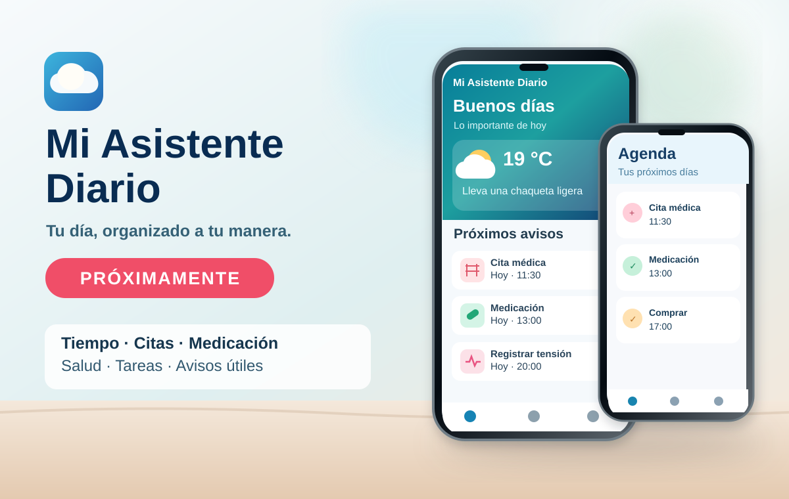
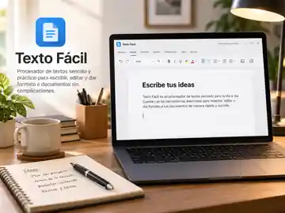

Próximamente · En desarrollo
Mi Asistente Diario
Tu día, organizado a tu manera.
Una aplicación gratuita para Android que te ayuda a recordar lo importante, organizar tu jornada y anticiparte a lo que necesitas. Elige los apartados que quieres utilizar y recibe avisos según tus preferencias, sin funciones obligatorias.
- ☀️ Tiempo y consejos de ropa
- 📅 Citas y calendario
- 💊 Medicación y horarios
- ♥ Tensión, pulsaciones y peso
- ✓ Tareas y recordatorios
- 🔔 Resumen del día
Consulta el tiempo antes de salir, organiza citas y compromisos, registra tus mediciones y prepara los recordatorios que necesitas. Su objetivo es reunir la información en un resumen sencillo y, progresivamente, relacionarla para darte recomendaciones oportunas.
Personalizable: módulos opcionales, colores y opciones de lectura. Se están preparando más idiomas y nuevas funciones para el hogar y la vida diaria.
En preparación. Todavía no hay una APK pública ni fecha de lanzamiento confirmada. La descarga se habilitará cuando la versión esté comprobada.
Android · Asistente personal · Organización y salud

En desarrollo
Texto Fácil
Escribe, edita y da formato a tus documentos sin complicaciones.
Procesador de textos gratuito para Windows, pensado para cartas, trabajos, apuntes y documentos cotidianos. Con una interfaz clara y herramientas habituales de formato, páginas, tablas e imágenes, sin la complejidad de una suite ofimática profesional.
Seguimos mejorándolo y probándolo antes de publicarlo. Estará disponible cuando esté preparado.
Windows · Escritura y documentos
Próximamente
Sopa de Letras PRO
Encuentra palabras y descubre 40 misterios en una aventura con imágenes desbloqueables.
Juego gratuito de sopas de letras para Android con tres modos: Libre, Progresivo y Aventura. Incluye 40 enigmas e imágenes desbloqueables, categorías temáticas, pistas y estadísticas.
Resuelve un enigma para revelar una imagen y guardarla en tu álbum. Juega sin conexión, sin anuncios y sin pagos.
Versión 1.18.0 preparada. La descarga se habilitará cuando GitHub confirme la APK firmada.
Ver ficha del juego y estado de la descarga →
Android · Juegos de palabras